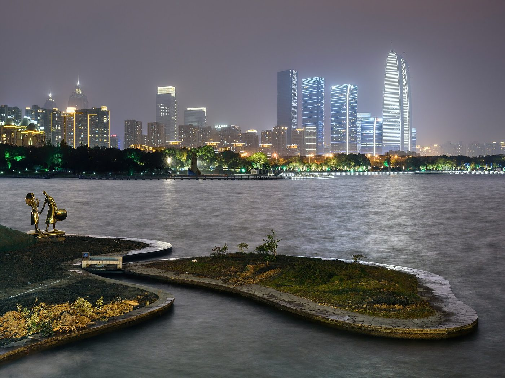
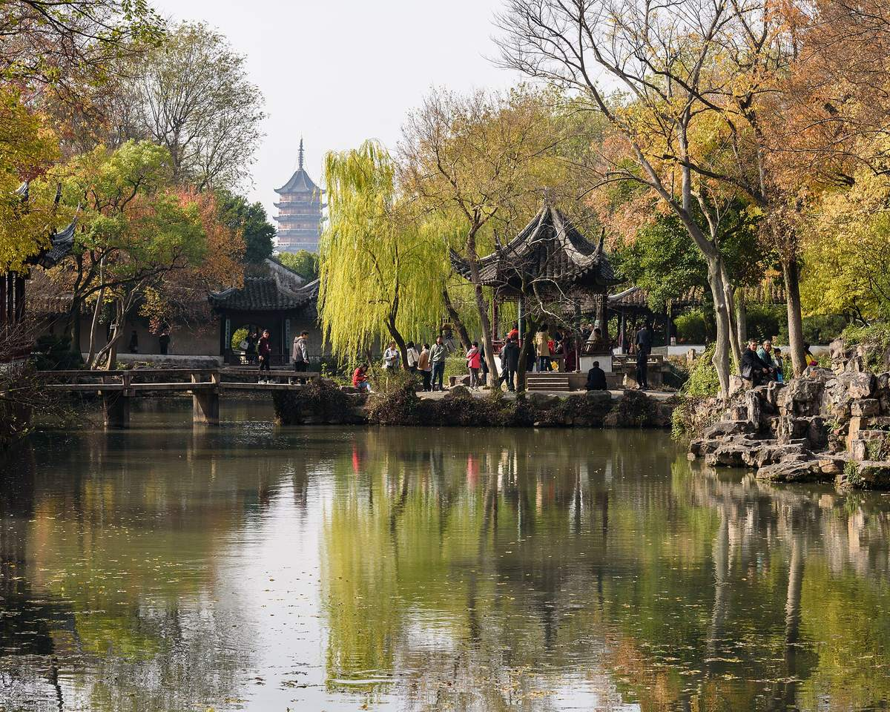
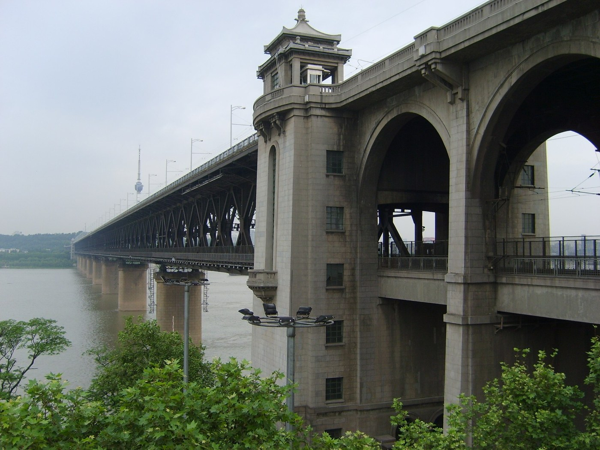

Photo: King of Hearts · Wikimedia Commons · CC BY-SA 4.0
Unit 7 of 10
Hangzhou and Its Rivals
Hangzhou is usually compared with Suzhou, Chengdu, Wuhan and Nanjing, cities of similar size that make their money in different ways.
- the four cities Hangzhou is most often compared with
- what each one's economy runs on
- why a big population does not mean a rich city
- how Hangzhou and Suzhou, the old "paradise" pair, went separate ways
- Peer city
- A city of similar size and rank, used for comparison.
- Services
- Work that sells skills or help instead of goods: shops, banks, software, tourism.
- Industrial park
- A planned area built for factories and companies.
7.1 Five cities side by side
Four cities make good peer cities for Hangzhou: Suzhou, Chengdu, Wuhan and Nanjing. Their economies are similar in size, but each makes its money a different way.
| City | People, end of 2025 | GDP 2025, trillion yuan | What its economy runs on | Known for |
|---|---|---|---|---|
| Hangzhou | 12.7 million | 2.30 | Internet, AI and online shopping; services are 74% of the economy | West Lake, Longjing tea, Alibaba |
| Suzhou | 13.05 million | 2.77 | Factories: 4.9 trillion yuan of factory goods a year, 2nd in China | Classical gardens, canals, silk |
| Chengdu | 21.5 million | 2.48 | Electronics, IT and digital media | Giant pandas, hot pot, teahouses |
| Wuhan | 13.9 million | 2.21 | Cars (Dongfeng Motor is based there) and universities | Where the Han River meets the Yangtze |
| Nanjing | 9.64 million | 1.94 | Electronics, computer chips, medicine and research | Capital of several dynasties, including the first Ming capital |
Tap a column heading to sort. Nanjing's economy ranked 10th among Chinese cities in 2025.
7.2 A big population is not the same as a rich city
Chengdu has the most people of the five, but it does not produce the most. Divide each city's GDP by its population and the order changes: Suzhou and Nanjing come out on top, Hangzhou is in the middle, and Chengdu is last.
Compare Hangzhou with Chengdu.
- Chengdu's economy (2.48 trillion yuan) is only about 8% bigger than Hangzhou's (2.30 trillion).
- But Chengdu has about 70% more people (21.5 million against 12.7 million).
- Hangzhou: 2.30 trillion ÷ 12.7 million ≈ 181,000 yuan per person.
- Chengdu: 2.48 trillion ÷ 21.5 million ≈ 115,000 yuan per person.
Each Hangzhou resident produces, on average, about 57% more than each Chengdu resident.
7.3 Hangzhou and Suzhou: the "paradise" pair
An old saying links the two cities: "Above is heaven, below are Suzhou and Hangzhou." Both grew rich on silk and canals. Hangzhou has the China National Silk Museum, opened in 1992 and described as the largest silk museum in the world. Suzhou is famous for its classical gardens, nine of which are a UNESCO World Heritage site, first listed in 1997.


Today the two have gone separate ways. Suzhou became a factory city. Its industrial park, set up with Singapore in 1994, covers 278 square km, and industry makes up 42.5% of its economy. Hangzhou leaned toward services and software instead.
7.4 The two leisure cities: Hangzhou and Chengdu
Hangzhou has marketed itself as the "Oriental Leisure Capital" and has hosted the World Leisure Expo. Chengdu is known across China for its laid-back way of life, with its hot pot, mahjong and teahouses.
7.5 The neighbors: Nanjing, Wuhan and Shanghai
Nanjing is the capital of Jiangsu, the province just north of Zhejiang. The two provincial capitals are about 250 km apart by rail, 1 to 1.5 hours by fast train. Wuhan and Nanjing are both big university cities: Wuhan has about 1.44 million college students, and Nanjing more than 1 million.


Shanghai is the giant next door, about 45 minutes away by the fastest trains. Since 2019 a national plan has treated Shanghai, Jiangsu, Zhejiang and Anhui as one region of 358,000 square km, linking their markets and public services.
Check your understanding
- Which of the five cities has the most people? Which produces the most per person?
Show answer
Chengdu has the most people. Suzhou produces the most per person, about 212,000 yuan.
- What does Suzhou's economy run on, compared with Hangzhou's?
Show answer
Suzhou runs on factories; Hangzhou on services, internet and software.
- What saying links Hangzhou and Suzhou?
Show answer
"Above is heaven, below are Suzhou and Hangzhou."
- Which two cities in this unit are known for a leisure lifestyle?
Show answer
Hangzhou and Chengdu.
Sources
- Hangzhou government: 2025 GDP and economy mix
- Suzhou: Yicai GDP, Yicai population, Huanqiu industry, Wikipedia: Suzhou Industrial Park, UNESCO: Classical Gardens of Suzhou
- Chengdu: Sichuan Daily GDP, Yicai population, The Star
- Wuhan: Tiger Brokers news GDP, NetEase population, Wikipedia
- Nanjing: National Business Daily GDP, The Paper population, Britannica
- Huxiu: university students by city
- Wikipedia: Suhang and Wikipedia: China National Silk Museum
- World Leisure Organization: Hangzhou
- China Travel: Shanghai to Hangzhou and Chinese government: Yangtze River Delta plan